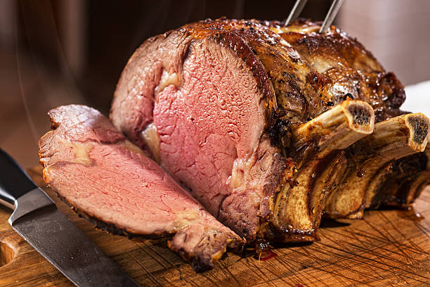

Prime Rib

Description
This is a delectable, juicy prime rib.
First by slow roasting, then blasting it with the broiler.
Ingredients
- 1 (10 pound) prime rib loin roast
- 2 cups concentrated beef base (paste)
- 1 clove garlic, minced
- 1/2 cup chopped fresh thyme
- 1/2 cup dried oregano
- 1/2 cup whole black peppercorns
- 2 teaspoons salt
Steps
- Season the roast
- Stick it into a preheated oven for 2 hours
- Turn on the broiler for 15 minutes
- Take out and rest for 15 minutes